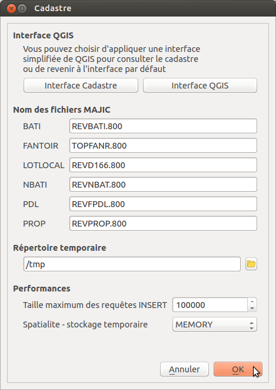
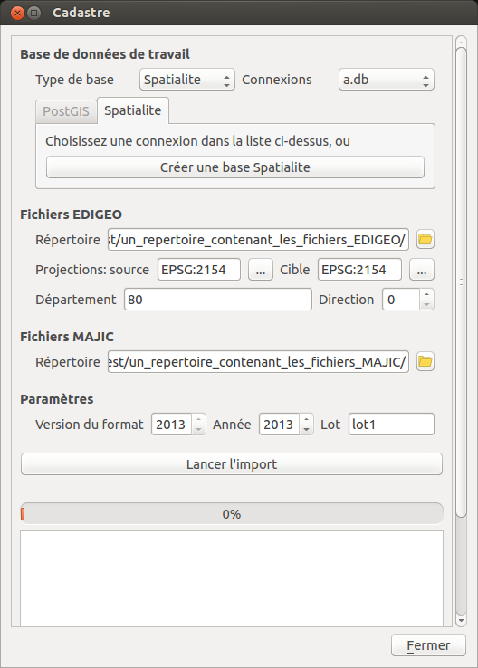
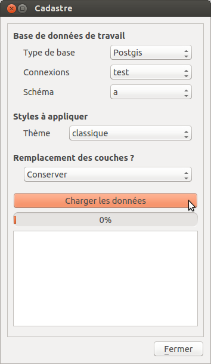
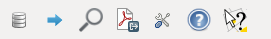

Auteurs
Michaël DOUCHIN - 3liz
Résumé
Ce document contient la documentation du plugin Cadastre pour le logiciel QGIS.
Le plugin Cadastre est dans les dépôts officiels du projet QGIS. Pour l’installer, il faut :
Une fois le plugin installé, un nouveau menu Cadastre apparaît dans le menu Extensions de QGIS. Il comporte les sous-menus suivants :
Ces sous-menus sont détaillés dans les chapitres suivants.
Avant d’importer les premières données cadastrales dans la base de données, il faut au préalable configurer le plugin :

Les 2 boutons Interface Cadatre et Interface QGIS permettent d’ouvrir une aide pour appliquer une interface simplifiée adaptée à une utilisation de consultation du Cadastre.
A ce jour, QGIS ne permet pas de modifier dynamiquement l’interface via un plugin. Nous incorporerons cette fonctionnalité lorsque ce sera possible. En attendant, il faut donc le faire manuellement, comme expliqué dans la fenêtre d’aide.
Cette partie permet de spécifier comment sont appelés les fichiers MAJIC sur votre poste de travail. En effet, les conventions de nommage peuvent changer d’un département à l’autre. Souvent, les fichiers se terminent par une extension relative au département et à la direction, par exemple .800 pour les fichiers du département de la Somme.
.. note:: Il est important de bien configurer ces noms de fichiers avant votre premier import.
Si le plugin ne trouve pas les fichiers MAJIC pendant l’import, alors que vous aviez spécifié le bon répertoire d’import, un message vous avertira et vous proposera d’annuler l’import.
Vous pouvez choisir ici le modèle de composeur d’impression qui sera utilisé dans la fonction Export la vue . Un modèle est fourni dans le répertoire composeur du plugin, et sera utilisé si vous ne proposez pas le votre.
Pour l’instant, le modèle gère un bloc de carte, mais pas les blocs de table attributaire.
Vous pouvez choisir le répertoire dans lequel les scripts seront copiés, et les fichiers décompressés. Choisisez un répertoire contenant assez de place pour stocker les fichiers temporaires, surtout si vous souhaitez charger des données volumineuses.
Ce répertoire est aussi celui dans lequel les relevés parcellaires et les relevés de propriété seront exportés.
Vous pouvez modifier dans ce groupe les options suivantes pour adapter le plugin aux performances de votre matériel :
Taille maximum des requêtes INSERT : C’est le nombre total de requêtes INSERT lancées dans un groupe de modification ( BEGIN/COMMIT) . Vous pouvez baisser le chiffre jusqu’à 10000 si vous avez une machine légère et un gros volume de données à importer. Plus le chiffre est bas, plus l’import initial peut prendre du temps.
Stockage temporaire : Le mode MEMORY est plus rapide, mais nécessite assez de mémoire vive pour stocker les données à traiter. Le mode DEFAULT est plus lent et adapté à des ordinateurs avec peu de mémoire vive.
Cette boite de dialogue permet de réaliser un import de données EDIGEO et MAJIC .

Le plugin permet l’import de données MAJIC de 2012 à 2016 et des données EDIGEO . Il est possible d’importer des données de manière incrémentale, étape par étape , ou bien d’importer en une seule fois .
Le plugin utilise pour cela la notion de lot . Un lot regroupe un ensemble de données cohérent pour votre utilisation. Par exemple, le lot peut être le code d’une commune, ou l’acronyme d’une communauté de commune. C’est une chaîne de 10 caractères maximum. Vous pouvez utiliser des chiffres ou des lettres.
Vous pouvez par exemple importer les données dans cette ordre :
Il est donc important de conserver une liste des lots définis pendant les imports successifs, pour savoir ensuite quel lot utiliser si on souhaite écraser des données. Une version prochaine du plugin pourra intégrer un tableau récapitulatif des imports effectués dans une base de données pour faciliter le suivi des imports réalisés.
.. note:: Il est conseillé d’importer des données de millésime différents dans des bases de données ou des schémas PostGreSQL différents, car la structure peut changer d’un millésime à l’autre ( ajout de colonnes, modification de longueur de champs, etc.
Deux Systèmes de Gestion de Bases de Données (SGBD) sont supportés par le plugin Cadastre :
Nous conseillons d’utiliser PostGreSQL pour des données volumineuses et pour gérer des accès multiples à la base de données.
Pour les bases de données PostGIS , il faut :
Pour les bases de données Spatialite , l’interface d’import permet de créer une base de données vide et la connexion QGIS liée si nécessaire.
Pour lancer l’importation, il faut bien avoir au préalable configuré les noms des fichiers MAJIC via le menu Configurer le plugin . Ensuite, on ouvre la boite de dialogue
On configure ensuite les options :
Choisir la connexion
Choisir le répertoire contenant les fichiers EDIGEO :
On peut sélectionner le répertoire parent qui contient l’ensemble des sous-répertoires vers les communes : le plugin ira chercher les fichiers de manière récursive.
seuls les fichiers zip et tar.bz2 sont pour l’instant gérés
Choisir la projection source des fichiers EDIGEO et la projection cible désirée
Choisir le numéro du Département , par exemple : 80 pour la Somme
Choisir le numéro de la Direction , par exemple: 0
Choisir le répertoire contenant les fichiers MAJIC
Choisir la version du format en utilisant les flèches haut et bas
Choisir le millésime des données , par exemple 2012
Choisir le Lot : utilisez par exemple le code INSEE de la commune.
Activer ou désactiver la case à cocher Corriger les géométries invalides selon la qualité de votre jeu de données EDIGEO.
Utiliser la barre de défilement de la fenêtre pour aller tout en bas et afficher tout le bloc texte de log situé sous la barre de progression.
Lancer l’import en cliquant sur le bouton Lancer l’import
Le déroulement de l’import est écrit dans le bloc texte situé en bas de la fenêtre.
.. note:: Pendant l’import, il est conseillé de ne pas déplacer ou cliquer dans la fenêtre. Pour l’instant, le plugin n’intègre pas de bouton pour annuler un import en cours.
Une fois les données importées dans la base, vous pouvez les importer dans QGIS via le menu Charger les données .

Il faut d’abord indiquer au plugin où récupérer les données:
Puis on choisir un thème à utiliser pour la symbologie des couches:
En cochant la case Ajouter seulement Commune, sections, parcelles et bâti , vous indiquez que vous souhaitez ouvrir seulement ces couches dans QGIS (et pas les autres couches comme les bornes, les croix, etc.)
Filtrer par expression sur les communes : cette option vous permet de ne pas charger la totalité des données, mais seulement celles qui correspondent aux communes filtrées via une expression. Vous devez connaître la structure de la table geo_commune pour pouvoir réaliser ce filtre. Si l’expression est invalide, alors le plugin chargera l’ensemble des données.
Attention à cette 2ème option, qui est expérimentale, et qui peut poser des souci de performance. Pour information, cette option ajoute un filtre à chaque couche via une sous-requête. Une fois les couches chargées, vous pouvez consulter ce filtre via l’onglet Général de la boîte de dialogue des propriétés de chaque couche.
Exemples d’expression:
Pensez à enlever les données cadastrales existantes dans votre projet QGIS : Le plugin ne sait pas gérer la recherche et l’interrogation de données si on a plus qu’une version des couches parcelles, communes et sections dans le projet QGIS.
Enfin, cliquez sur le bouton Charger les données pour lancer le chargement.

La barre d’outil peut s’afficher ou se masquer à partir :
Elle contient :
Pour connaître l’action d’une des icônes, il suffit de laisser la souris un moment au-dessus pour voir apparaître une bulle d’information.
Pour avoir des informations complètes sur une parcelle, il faut avoir au préalable importé des données MAJIC dans la base de données. Sinon, seules les informations principales issues de l’EDIGEO seront affichées et certains boutons d’action sont désactivés.
Pour faire apparaître la fiche d’information d’une parcelle, il faut:
La fenêtre d’identification s’affiche alors,
Elle présente:
une zone contenant des boutons d’action
2 boutons pour exporter le relevé parcellaire et le relevé de propriété au format PDF
.. note:: Si vous n’avez pas importé de données FANTOIR, la commune de la parcelle ne sera pas affichée dans la fenêtre et l’adresse pourra être tronquée (de même pour les relevés exportés)
Dans la barre d’outil Cadastre, ainsi que dans le menu, vous pouvez exporter la vue courante de la carte en PDF via le menu Exporter la vue .
Cette fonctionnalité s’appuie sur un modèle de composeur d’impression , configurable dans les options du plugin (voir ci-dessus). Si vous n’avez pas configuré de composeur personnalisé, celui installé par le plugin est utilisé.
Cette fonctionnalité est basique, et ne gère pas pour l’instant les composeurs complexes, avec des tables attributaires et des configurations d’atlas.

Le panneau de recherche propose des outils pour rechercher des parcelles via 3 entrées principales
Les différentes recherches seront détaillées dans les sous-chapitres suivants.
Pour afficher le panneau de recherche:
Une bulle d’information affiche la fonction des boutons au survol de la souris.
.. note:: Si la base de données ne contient aucune donnée MAJIC, alors les outils de recherche par adresse et par propriétaire sont désactivés.
L’outil présente 3 listes déroulantes :
Il est possible de sélectionner une entité :
Les listes déroulantes sont hiérarchiques :
Des boutons d’actions sont positionnés sous les 3 listes déroulantes et permettent de lancer l’action choisie sur le dernier objet sélectionné dans les 3 listes :
A côté des 3 listes, un bouton croix rouge permet de remettre la liste à son état initial, c’est-à-dire sans objet sélectionné. Par exemple, si on avait sélectionné une commune dans la premier liste et une section dans la seconde, on peut cliquer sur la croix rouge à côté de la section pour désélectionner la section dans la liste. Ainsi si on utilise le bouton de Zoom, on zoomera sur la commune et non sur la section qui était précédemment sélectionnée
Si une parcelle a été sélectionnée dans la liste Parcelles , il est possible d’ exporter le relevé parcellaire en cliquant sur le bouton icône PDF situé en bas à droite du bloc de recherche de lieux. Le PDF est généré et ouvert avec le lecteur PDF par défaut du système.
.. note:: Pour l’instant, cet outil ne fonctionne que si des données MAJIC sont dans la base, et si les données FANTOIR ont été importées. Si vous ne possédez pas de données FANTOIR dans votre lot de données MAJIC, vous pouvez le télécharger pour votre département ici (et relancer l’import Majic): http://www.collectivites-locales.gouv.fr/mise-a-disposition-fichier-fantoir-des-voies-et-lieux-dits
Pour lancer une recherche de parcelles par adresse , il suffit:
La recherche est effectuée et la liste déroulante où vous avez tapé l’adresse à chercher est maintenant raffraîchie et contient l’ensemble des résultats trouvés.
Si des résultats ont été trouvés, on peut ensuite :
.. note:: Ce bloc de recherche ne fonctionne pas si aucune donnée MAJIC n’est présente dans la base
Le principe et le fonctionnement est le même que pour la recherche par adresse, avec les différences suivantes :
Il est possible d’exporter le relevé de propriété pour les personnes qui ne possèdent pas de propriété non bâtie.
Le menu Cadastre > A propos ouvre une fenêtre d’information sur le plugin Cadastre : financeurs, auteur, licence, dépôt de sources, etc.
Cette fenêtre est automatiquement affichée lors de la première utilisation du plugin, mais pas les fois suivantes.
Le menu Cadastre > Notes de version ouvre une fenêtre qui montre les changements effectués sur le plugin Cadastre entre la version installée et la version précédente. Cette fenêtre est affichée automatiquement une première fois lors de la montée de version.
Pour faciliter la prise en main, vous pouvez consulter les vidéos en ligne :
Le lien suivant permet de voir comment sont organisées les données cadastrales dans la base de données (tables, contraintes, etc.)
Dans le modèle, plusieurs tables contiennent des informations sur les parcelles
geo_parcelle : contient les parcelles EDIGEO
parcelle : contient les données MAJIC liées au parcelles cadastrales
parcelle_info : contient une version consolidée des parcelles EDIGEO et MAJIC: la géométrie EDIGEO, et les informations résumées de la parcelle, dont les propriétaires ( information séprées par la barre verticale | si la parcelle a plusieurs propriétaires )
Les champs parcelle.parcelle et geo_parcelle.geo_parcelle peuvent être utilisés pour les jointures entre la table parcelle et la table geo_parcelle
L’identifiant
geo_parcelle
(ou parcelle) est unique et constitué comme suit :
Année (4) + Département (2) + Direction (1) + Commune (3) + Préfixe (3) + Secteur (2) + Numéro de plan (4)
soit
19 caractères